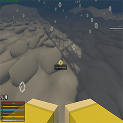
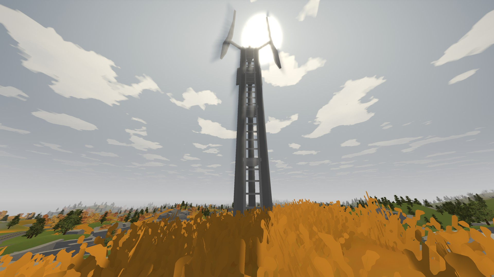
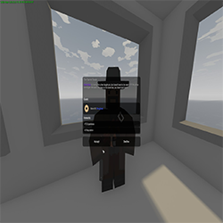

Viisid kuidas teha kiiremini ja paremini!

Ülesanne 3
Selles ülesanded on vaja mängijal leida ühe karakteri pulma sõrmus, mis tal on kaduma läinud. Üks suurimaid vigu, mida uued mängijad teevad on see, et eeldatakse, et see on kuskil kaugel. Tegelikult on see otse laeva all. Kui minna kohta, kus on redel, et laevale minna ja sealt otse alla ujuda leiab sõrmuse koheselelt ning saab minna uute ülesannete juurde.

Ülesanne 4
Selles ülesandes peab mängija parandama 3 raadiomasti. Koik kolm on Moskva lähedal. Selle asemel, et kõndida iga raadiomasti juurde ja kulutada palju aega, saab palju kiiremini kui muretseda endale lennuk, millega ülesande tegemine on 3 korda kiirem.

Ülesanne 5
Selles ülesandes on vaja mängijal valmista või leida politseiülemusele "Brian" sõõriku. Kõige lihtsam ja kiireim viis on leida sõõriku komponendid vastavalt: 1 taigna tükk ning 1 vahtra siirupi. Neid kahte komponenti leiab tihti pagari poest. Peale nende 2 eelmainitud eseme on vaja ka, et mängijal oleks saanud piisavalt kõrge taseme küpsetamises, mis on tase 2. Pärast seda on vaja ainult lõket, kus küpsetada see sõõrik ning teha politseiülem "Brian" rõõmsaks.